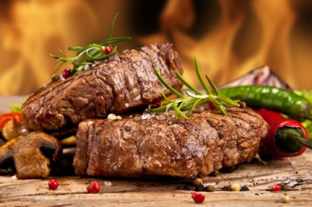

Рулеты из ветчины4 ломтика ветчины, 1 стакан риса, 1 маленькая головка репчатого лука, 1 кусочек корня сельдерея, 1 морковь, 1 стручок зеленого перца, 1 стакан майонеза, 1 ст. ложка сливочного масла, 1 ст. ложка растительного масла, 1 ст. ложка нарезанной зелени петрушки, лимонный сок, листья зеленого салата, соль по вкусу.
Мелко нарезанный лук припустить в сливочном масле несколько минут, добавить рис, тщательно размешать, залить 2,5 стакана горячей воды, посолить и поставить на слабый огонь до впитывания воды и набухания. Отдельно в растительном масле потушить мелко нарезанные сельдерей, морковь и перец. Как только овощи размякнут, смешать их с рисом и остудить. Рисово-овощную смесь заправить майонезом, разведенным небольшим количеством лимонного сока, и посыпать зеленью петрушки. Приготовленную начинку выложить на ломтики ветчины, завернуть их в виде рулета и подать на листьях салата, посоленных и сбрызнутых несколькими каплями лимонного сока.
Закуска английская700 г копченого мяса, 100 г копченого сала, 4 небольших соленых огурца, 4 небольшие соленые моркови, 4 соленых соцветия (кочешка) цветной капусты, 8 маринованных грибов, 4 сваренных вкрутую яйца, 4–8 кусочков острого сыра (рокфора) или брынзы, 1 ст. ложка горчицы, 2 ч. ложки томатного пюре, 1 ч. ложка сахара, 4 ст. ложки растительного масла, черный перец по вкусу.
Морковь нарезать кружочками, грибы дольками, огурцы крупными кубиками, цветную капусту разобрать на мелкие кочешки. Все продукты смешать, заправить заливкой, приготовленной из томатного пюре, разведенного двумя столовыми ложками кипяченой воды, горчицы, сахара, перца, растительного масла, соли (по вкусу), и оставить на 2–3 часа. Мясо и сало мелко нарезать, смешать и поперчить. Овощную смесь выложить на середину тарелки и украсить мелко нарезанным мясом, кусочками сыра (брынзы) и дольками вареных яиц.
Салат из фасоли с ветчиной1,5 стакана вареной фасоли, 200 г ветчины, 2 вареных яйца, 3 ст. ложки растительного масла, 2 ст. ложки уксуса, 50 г корня хрена, соль, черный молотый перец, 1 головка репчатого лука.
В салатник положить фасоль, добавить нарезанный тонкой соломкой лук, мелко нарезанную ветчину, нарезанные кубиками яйца, посолить и поперчить по вкусу, заправить растительным маслом, уксусом, все тщательно перемешать и посыпать натертым хреном.
Заливное двухцветное50 г ветчины, 100 г майонеза, 1 ст. ложка томатного соуса, 1 ч. ложка мелко нарезанной зелени петрушки и базилика, 2 яйца, 8 маринованных огурчиков, 250 мл разведенного желатина, растительное масло, соль по вкусу.
Желатин охладить, чтобы он застыл до полутвердого состояния. В миску положить майонез и постепенно добавить желатин. Смесь разделить пополам. Одну часть перемешать с томатным соусом, другую – с петрушкой и базиликом. Вторую часть выложить в форму, слегка смазанную растительным маслом, и поставить в холодильник до полного затвердения. Заливное вынуть из холодильника, сверху положить ломтики сваренного вкрутую яйца, кубики ветчины, 3–4 нарезанных кружочками огурца, залить первой частью смеси и поставить в холодильник для полного застывания. Готовое заливное выложить на блюдо, украсить ломтиками яйца и кружочками огурцов, уложенных веером.
Тартинки с ветчиной10 ломтиков ржаного хлеба без корочки, 50 г сливочного масла, 100 г ветчины, 3 свежих огурца, каперсы, 0,5 ст. ложки горчицы.
В миске перемешать сливочное масло, пропущенную через мясорубку ветчину, мелко нарезанные огурцы, каперсы, горчицу. Этой смесью намазать ломтики хлеба, сверху накрыть их такими же ломтиками и положить в холодильник.
Крутоны с ветчиной и майонезомЧерствый белый хлеб, ветчина, соленые огурцы, черный молотый перец, салат, помидоры, морковь, петрушка, маслины, майонез.
Хлеб нарезать ломтиками круглой формы. Ветчину и соленые огурцы мелко нарубить, хорошо размешать и добавить немного черного перца. Приготовленную массу нанести на каждый ломтик и придать ему форму половинки яблока. На блюдо положить листья зеленого салата, на них поместить крутоны, залить их майонезом и украсить помидорами, вареной морковью, веточками петрушки и маслинами.
Тосты с копченой грудинкой200 г пшеничного хлеба, 100 г копченой грудинки, 3 помидора, соль и перец по вкусу.
Копченую грудинку нарезать ломтиками, положить в хорошо разогретую сковороду, обжарить без жира, снять со сковороды и в жиру, вытопившемся из грудинки, обжарить нарезанные кружочками свежие помидоры. Ломтики хлеба поджарить в тостере. На каждый тост положить по ломтику грудинки, сверху – по кружочку помидора, залить соусом, оставшимся от обжаривания помидоров.
Семейный бутерброд с перцем и ветчиной1 белый батон, 2 зубчика чеснока, 100 г сливочного масла, 8 редисок, 2 маленьких маринованных огурца, 2 стебля лука-порея, 2 стручка перца чили, по 4 ломтика вареной ветчины и сыра эмменталь, по 4 ломтика копченой корейки и сыра эдем, 150 г сыра рокфор, перец по вкусу.
В батоне сделать 12 глубоких надрезов. Чеснок очистить, растолочь, смешать со взбитым в пену сливочным маслом, заправить перцем и этой смесью смазать надрезы в батоне.
Овощи очистить. Редиску и маринованные огурцы нарезать кружочками, а лук-порей – кольцами. Стручки перца чили помыть, разрезать пополам и, удалив семена, мелко порубить. Начинить батон: в первые 4 надреза положить по ломтику копченой корейки и сыра эдем, следующие 4 надреза смазать слоем сыра рокфор, положить по дольке ветчины и посыпать луком-пореем, в последние 4 надреза положить ломтики сыра эмменталь, огурцы и редиску. Батон с начинкой завернуть в фольгу и запекать в духовке около 15 минут.
Салат с копченой корейкой8 кусочков копченой корейки, 800 г картофеля, 1 головка репчатого лука, 2 стручка сладкого перца, 2 огурца, 3 ст. ложки уксуса, 8 ст. ложек растительного масла, 4 ст. ложки мексиканского соуса, по 0,5 ч. ложки соли и черного молотого перца, зелень.
Картофель отварить в мундире, очистить и нарезать кружочками. Лук нарезать кубиками, огурцы и сладкий перец – так же. Для соуса смешать уксус, соль и перец, заправить им салат и оставить на 1 час. Ломтики корейки смазать мексиканским соусом и свернуть рулетиками. На блюдо уложить салат, корейку и украсить зеленью.
Праздничная закуска300 г ветчины, 250 г маринованных артишоков, 150 г сыра, 100 г маслин, базилик.
Для соуса: 4 ст. ложки хереса, 4 ст. ложки оливкового масла, соль, перец по вкусу.
Ветчину нарезать очень тонкими ломтиками и красиво выложить на блюдо вместе с маслинами и разрезанными пополам артишоками. Тонко нарезанный сыр свернуть трубочками и тоже выложить на блюдо. Все залить соусом и украсить веточками базилика. Для приготовления соуса оливковое масло смешать с хересом, посолить и поперчить.
Салат «Пикантный»400 г квашеной капусты, 250 г копченой корейки, 2 яблока, 1 крупная головка репчатого лука, 100 г редьки, растительное масло, сок ананаса, сахар по вкусу.
Квашеную капусту крупно нарезать, добавить натертые яблоки и редьку, измельченный лук, нарезанную кубиками и обжаренную копченую корейку. Все тщательно перемешать, заправить растительным маслом, соком ананаса и сахаром.
Салат из ветчины с рисом и горошком250 г ветчины, 1 стакан вареного риса, 1 стакан вареного горошка, 3 ст. ложки измельченной зелени петрушки, 0,5 банки майонеза, соль и черный молотый перец.
Ветчину мелко нарезать, смешать с рисом и горошком, добавить по вкусу черный перец, соль, зелень петрушки, заправить майонезом и тщательно перемешать. Выложить в салатницу, украсить листочками зеленого салата и нарезанными кружочками помидоров.
Закуска «Новогодняя»Черствый белый хлеб, молоко, яйца, жир, майонез, ветчина, соленые огурцы, маслины, морковь, сладкий стручковый перец, петрушка.
Хлеб нарезать ломтиками, смочить в молоке, затем в яйце и обжарить в сильно разогретом жире до золотистого цвета. Поджаренным ломтикам придать прямоугольную форму. На каждый крутон положить тонкий ломтик ветчины, вырезанный по размеру крутона, а сверху поместить половинку вареного яйца, разрезанного по длине, выпуклой частью вверх. Крутоны залить майонезом, смешанным с мелко нарезанными огурцами, и украсить маслинами, нарезанными полосками. По бокам положить морковь, кружочки вареного яйца, стручковый перец, нарезанный полосками, веточки петрушки.
Закуска из копченой колбасы250 г твердой копченой колбасы, 1 головка репчатого лука,
3 сырые картофелины, 1 стручок сладкого перца, 2 помидора, 2 яйца, зелень петрушки, растительное масло.
Колбасу и лук нарезать кубиками и обжарить в растительном масле, затем добавить нарезанные ломтиками картофель, перец, помидоры, накрыть блюдо крышкой и потушить на слабом огне. Незадолго до готовности вбить яйца. Готовое блюдо посыпать измельченной зеленью петрушки.
Салат с охотничьими сосисками (колбасками)300 г охотничьих сосисок (колбасок), 2 соленых огурца, 2 свежих огурца, 1 головка репчатого лука, уксус, растительное масло, перец красный молотый, соль.
Охотничьи сосиски (колбаски) и огурцы нарезать кубиками, добавить натертый на мелкой терке лук, посолить и поперчить по вкусу, заправить уксусом, растительным маслом и тщательно перемешать.